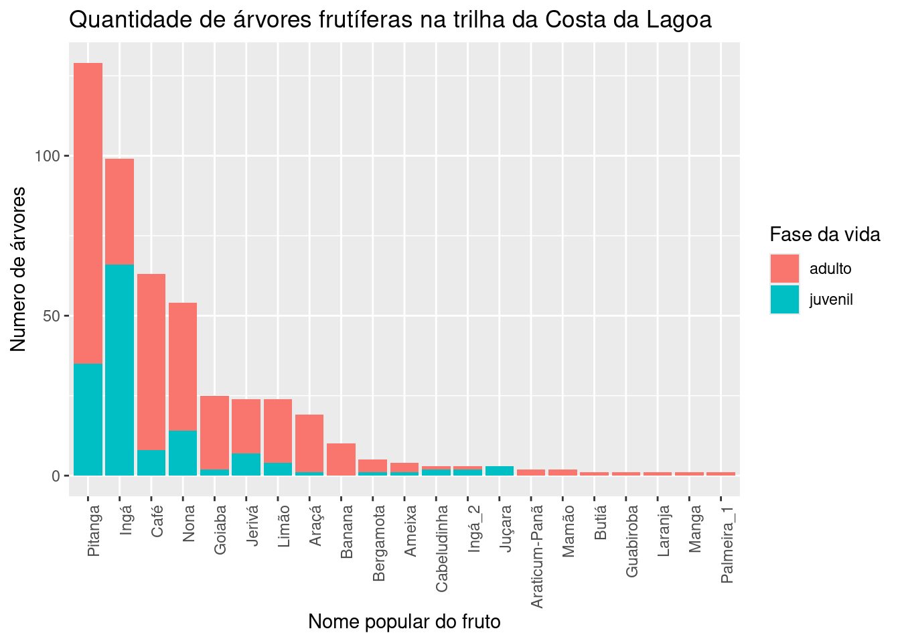

Estes resultados são preliminares, uma vez que ainda estamos coletando os dados. Venha ajudar nas saídas de campo (Veja a aba Cronograma). Fique atento às atualizações.
Até agora, achamos 21 espécies diferentes de árvores
frutíferas comestíveis pelo ser humano. Prosseguimos na busca.
| nome popular | nome científico |
|---|---|
| Limão | Citrus_sp |
| Nona | Annona_neosalicifolia |
| Jerivá | Syagrus_romanzoffiana |
| Ingá | Inga_striata |
| Café | Coffea_sp |
| Pitanga | Eugenia_uniflora |
| Goiaba | Psidium_guajava |
| Araticum-Panã | Annona_glabra |
| Ameixa | Eriobotrya_japonica |
| Banana | Musa_sp |
| Araçá | Psidium_cattleianum |
| Juçara | Euterpe_edulis |
| Mamão | Carica_papaya |
| Cabeludinha | Myrciaria_glazioviana |
| Laranja | Citrus_sp2 |
| Butiá | Butia_catarinensis |
| Manga | Mangifera_indica |
| Bergamota | Citrus_reticulata |
| Café | coffea_sp |
| Ingá | Ingá_striata |
| Palmeira_1 | Arecaceae |
| Guabiroba | Myrtaceae1 |
| Ingá_2 | Ingá_sp2 |
